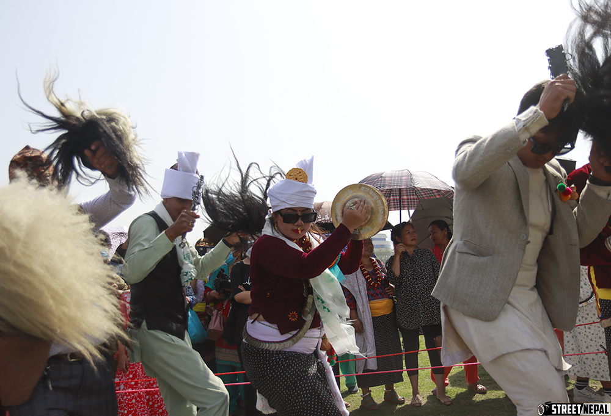
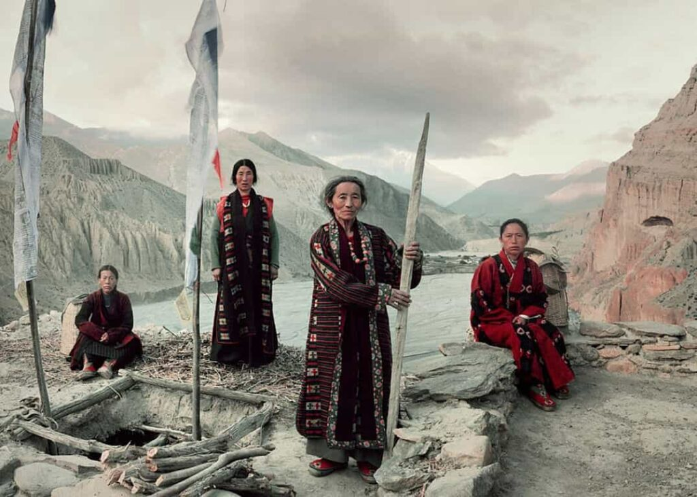
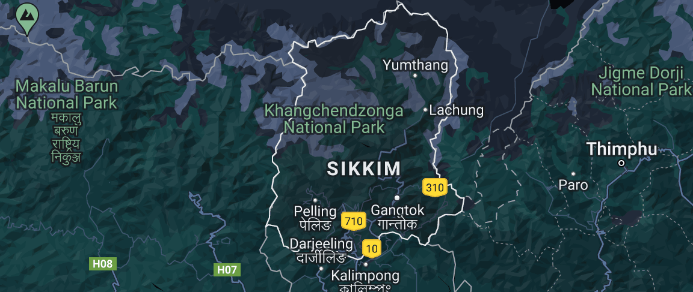
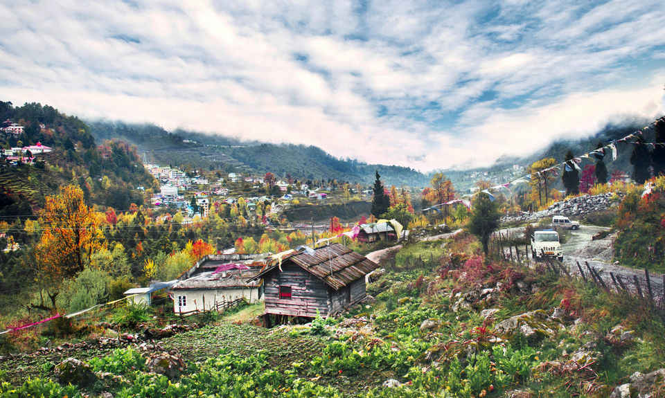

Where to Eath
Featured Restaurants

Taste of Sikkim
Sikkimese · Tibetan
Traditional thali and momos served in a warm family setting.

The Namgyal Kitchen
Sikkimese · Local
Generations-old recipes passed down through the Namgyal household.
Tashi Dhaba
Nepali · Street Food
Simple honest dhaba food — best sel roti in South Sikkim.

Pelling View Cafe
Fusion · Himalayan
Modern takes on Sikkimese classics with panoramic Kanchenjunga views.

House of Bamboo
Tribal · Sikkimese
Authentic tribal food featuring bamboo shoots and local herbs.
Nimtho Restaurant
Sikkimese · Authentic
One of Gangtok's most loved spots for authentic Sikkimese cuisine.

Sonam's Kitchen
Breakfast · Local
Best local breakfast spot in Pelling — hot momos and butter tea.
Pariwar Dhaba
Nepali · Home Style
Home-style Nepali food cooked fresh every day by the family.
Roll House
Street Food · Local
Iconic street-style rolls and local snacks loved by Gangtok locals.

Cafe Live & Loud
Fusion · Local
Lively cafe with local fusion food, live music, and mountain vibes.